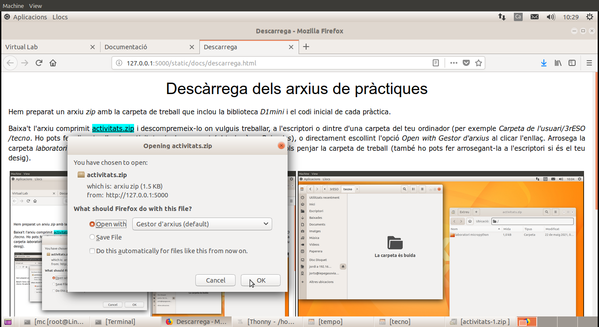
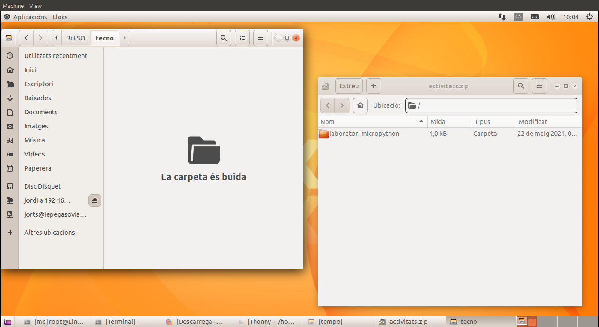
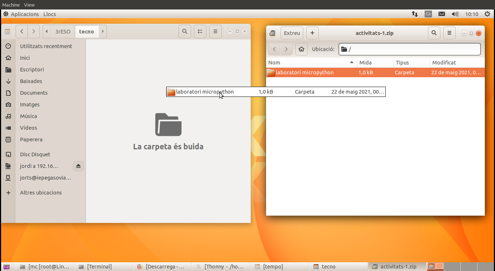
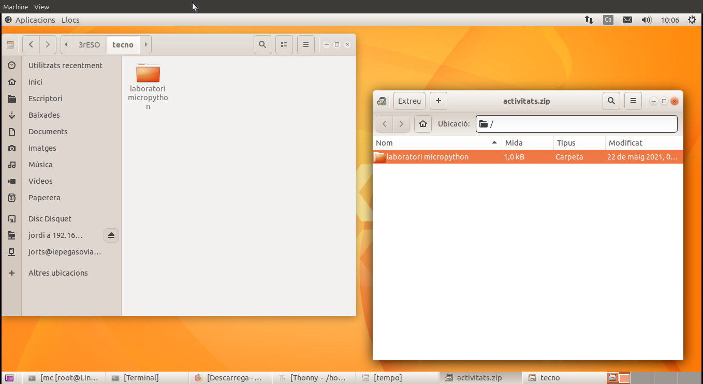
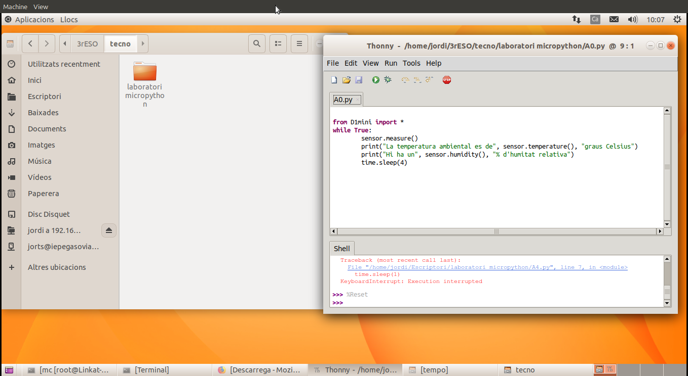

Hem preparat un arxiu zip amb la carpeta de treball que inclou la biblioteca D1mini i el codi inicial de cada pràctica.
Baixa't l'arxiu comprimit activitats.zip i descompremeix-lo on vulguis treballar, a l'escriptori o dintre d'una carpeta del teu ordinador (per exemple Carpeta de l'usuari/3rESO/tecno. Ho pots fer clicant a l'arxiu activitats.zip descarregat (el trobaràs a Baixades), o directament escollint l'opció Open with Gestor d'arxius al clicar l'enllaç. Arrosega la carpeta laboratori micropyton de la finestra del gestor d'arxius a la carpeta d'on vols penjar la carpeta de treball (també ho pots fer arrosegant-la a l'escriptori si és el teu desig).
|  |  |
|  |  |
Ara ja podem obrir l'entorn de desenvolupament Thonny i treballar amb els arxius descarregats.
